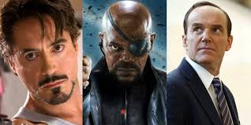
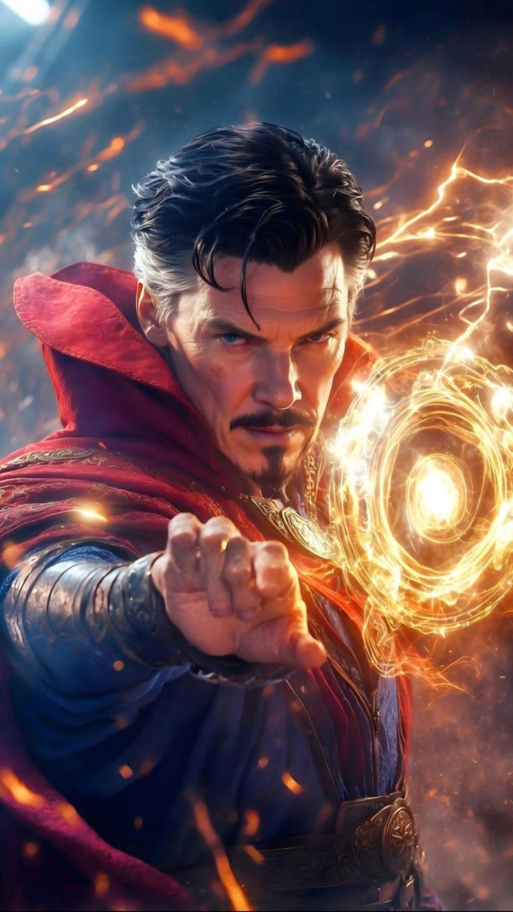
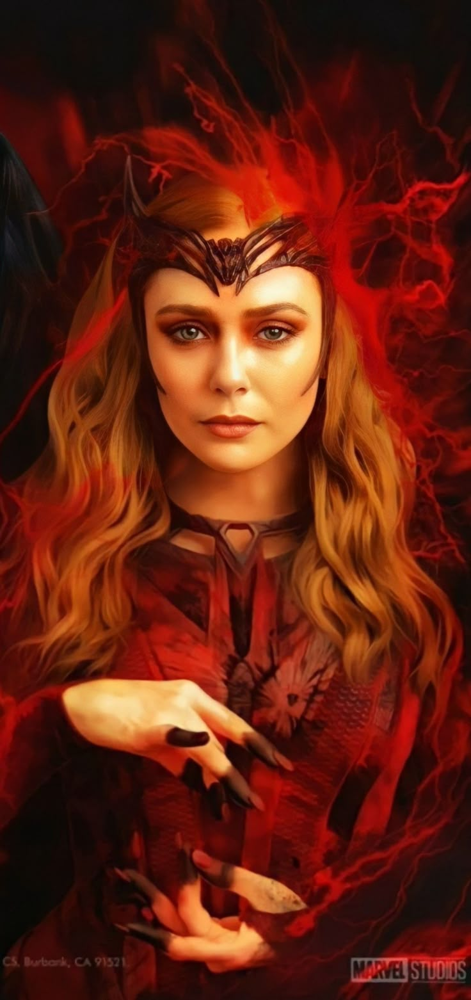

The Avengers are a group of superheroes from Marvel who come together to protect the world from powerful threats. The team is made up of individuals with different abilities, including genius inventors like Iron Man, super soldiers like Captain America, gods like Thor, and skilled fighters like Black Widow and Hawkeye. Some members have superhuman strength, others use advanced technology or magic, but all of them work as a team to defend Earth when danger is too great for one hero to face alone.
|  | |
|
|  | |
|
*Captain America: The First Avenger* tells the story of Steve Rogers, a weak but brave young man who dreams of serving his country during World War II. Rejected from the army because of his fragile body, Steve’s courage and determination catch the attention of Dr. Abraham Erskine, who chooses him for a secret experiment called the Super Soldier Program. After receiving the serum, Steve transforms into a powerful hero known as Captain America, using his strength and iconic shield to fight the evil HYDRA organization led by Red Skull. As the war intensifies, Steve proves that true heroism comes not from power, but from heart and sacrifice, ultimately risking his life to save millions and becoming a legend frozen in ice for decades.
Iron Man tells the story of Tony Stark, a brilliant genius, billionaire, and inventor whose life changes when he is captured by terrorists while demonstrating his company’s weapons. Using his intelligence and creativity, Tony builds a powerful armored suit to escape, realizing that his inventions have caused great harm to the world. Returning home, he decides to stop manufacturing weapons and instead uses his technology to protect people. As Iron Man, Tony faces powerful enemies, including his former mentor Obadiah Stane, and learns that true genius is not just about intelligence, but about responsibility, courage, and using one’s talents for the good of humanity.
Wanda Maximoff, also known as the Scarlet Witch, is one of the most powerful and emotional characters in the Avengers. She possesses extraordinary abilities such as chaos magic, telekinesis, and mind manipulation, which make her a formidable hero. Wanda’s journey is shaped by loss, love, and inner conflict, as she struggles to control her immense powers while coping with personal pain. Despite her hardships, she fights to protect humanity and her teammates, showing great strength, courage, and compassion. Wanda represents the balance between power and emotion, proving that true strength comes from both the heart and the mind.
Doctor Stephen Strange is a brilliant former neurosurgeon who becomes one of the most powerful sorcerers in the Marvel Universe. After a tragic accident damages his hands and ends his medical career, Strange searches for healing and discovers the mystic arts. Trained by the Ancient One, he learns to harness powerful magic, protect reality, and defend Earth from dark and supernatural threats. As Doctor Strange, he serves as the Sorcerer Supreme, using wisdom, time manipulation, and courage to safeguard the multiverse. His journey shows that true power comes from humility, learning, and selflessness.
Spider-Man, also known as Peter Parker, is a young and relatable superhero known for his agility, intelligence, and strong sense of responsibility. After being bitten by a radioactive spider, Peter gains extraordinary powers such as wall-crawling, super strength, and spider-sense. Guided by the lesson that “with great power comes great responsibility,” he uses his abilities to protect innocent people while balancing school, friendships, and personal struggles. As an Avenger, Spider-Man brings bravery, quick thinking, and heart to the team, proving that even an ordinary teenager can become an extraordinary hero.
Thor Odinson is the mighty God of Thunder and one of the strongest members of the Avengers. Hailing from the realm of Asgard, he wields the enchanted hammer Mjolnir, which grants him control over thunder and lightning. Initially proud and impulsive, Thor learns the true meaning of humility, responsibility, and sacrifice through his experiences on Earth. As a hero, he fights bravely to protect both his home and humanity from powerful enemies. Thor represents strength guided by honor and proves that true power comes from wisdom and compassion.